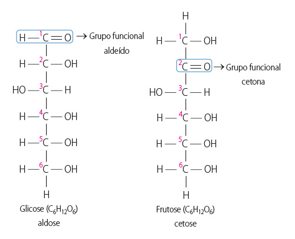
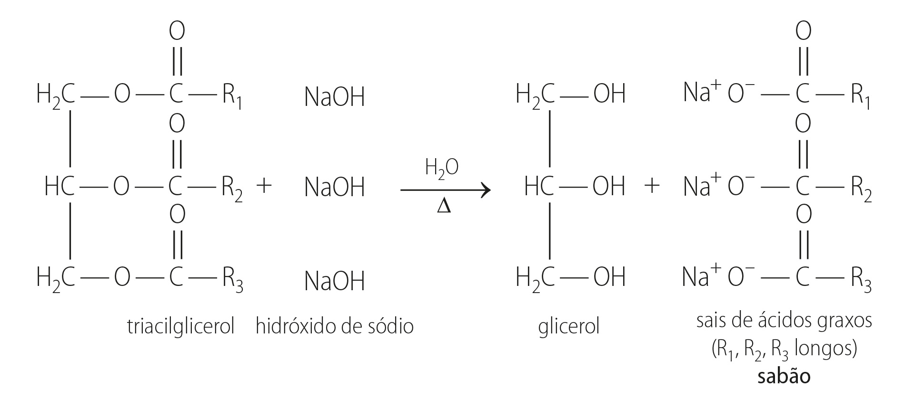

As dietas são rotinas alimentares realizadas para atingir determinado objetivo, mas nem sempre vão ao encontro do conceito de alimentação saudável por serem muito drásticas.
Você sabe o que são dietas restritivas?
Quais são os constituintes indispensáveis para construir um cardápio completo e saudável?
É correto fazer uma dieta completamente isenta de gordura quando o objetivo é emagrecer e perder gordura localizada?
Objetivos da unidade
identificar as principais características e divisões dos carboidratos, dos lipídios e das proteínas;
reconhecer que o conhecimento desses grupos de compostos é essencial para a compreensão de nossas funções biológicas.
A escolha de produtos para a alimentação é um processo complexo e pode envolver fatores econômicos, culturais e até mesmo psicológicos. Muitas pessoas, no momento da escolha, levam em consideração somente o sabor e ingerem alimentos
desprovidos de valor nutricional, favorecendo a incidência de diversos problemas de saúde, entre eles, a obesidade.
Para garantir uma boa alimentação, é preciso fazer uma dieta variada, que contenha todos os tipos de alimento, mas sem abusos. Essa dieta deve ser composta de proteínas, carboidratos, gorduras, fibras e minerais e também deve ser rica
em vitaminas. Entretanto, é preciso segui-la não apenas para manter o peso ideal, mas para garantir uma vida saudável.
Por se tratar da alimentação, o conhecimento da composição dos produtos que consumimos é essencial, principalmente para os selecionarmos de forma adequada. Após a ingestão, o alimento passa por um processo metabólico em que
carboidratos, lipídios e proteínas, entre outros, são biotransformados em produtos úteis a nosso corpo. O estudo de todo esse processo é explicado pela Bioquímica, subárea da Química que estuda os compostos químicos e sua atuação no
organismo.
Mundo do trabalho
Guia de carreiras: nutrição
Profissional da área da saúde, em linhas gerais o nutricionista é responsável por planejar e indicar maneiras adequadas de se alimentar. Além de trabalhar em restaurantes, lanchonetes, redes de fast-food e demais estabelecimentos
ligados à alimentação, o nutricionista também é fundamental em hospitais, programas de saúde pública, clubes e academias, entre outros setores.
“Um nutricionista pode desde gerenciar uma cozinha se preocupando em tornar os alimentos mais seguros do ponto de vista higiênico-sanitário e nutricional, até dentro do hospital onde uma das funções é controlar a dieta de pacientes
que têm de se alimentar por sonda, por exemplo”, afirma a nutricionista Tatiana Sadalla Collese, de 21 anos, que trabalha em um hospital de São Paulo.
À medida que cresce a preocupação mundial com os distúrbios alimentares, como a obesidade, aumenta também a procura e a importância do nutricionista. A indústria da estética, do culto ao corpo, também ajudam a reforçar seu espaço
no mercado.
“O estado nutricional adequado é uma condição de saúde. Os nutrientes que a pessoa absorve e utiliza dentro do seu metabolismo vai refletir na sua saúde, por isso nós somos aquilo que comemos. Quem tem uma alimentação balanceada
tem uma saúde melhor”, diz a nutricionista Clara Korukian Freiberg que dá aulas na Universidade São Camilo, em São Paulo.
Quem pensa em seguir carreira na nutrição, vai encontrar na faculdade disciplinas como Química, Anatomia e Biologia, principalmente no primeiro ano onde as matérias são comuns aos cursos da área da saúde. Nos anos finais, os
estudantes têm acesso às aulas práticas e aos estágios, que são oportunidades de vivenciar as diferentes áreas, o que facilita o ingresso do profissional recém-formado ao mercado de trabalho.
“O mercado na área de alimentação sempre foi muito promissor. Quem tem garra, iniciativa e empreendedorismo não tem dificuldade de conseguir emprego”, afirma Clara.
Para Tatiana, só durante a graduação, onde os alunos vivenciam, mesmo que de maneira simplista, as diferentes atuações da profissão, é possível saber qual a área de maior identificação. Definido o segmento, a dica de Tatiana é
partir para a especialização com uma pós-graduação. “A nutrição exige muito estudo, não dá para parar nunca. O profissional que não está atualizado fica obsoleto e está fora do mercado.” [...]
Carboidratos: Escolha o tipo certo para a sua dieta
[...] Engana-se quem pensa que os carboidratos são os vilões da perda de peso e que toda boa dieta necessariamente vai precisar os restringir. De acordo com a sua estrutura, os carboidratos são divididos em grupos e é isso que
determina a velocidade de absorção e qual a sua melhor finalidade.
Cereais, pães, farinhas, doces, frutas e tubérculos (mandioca, batata, entre outros) são exemplos de alimentos ricos em carboidratos.
Entenda um pouco mais sobre os grupos de carboidratos e saiba o que escolher:
Carboidratos simples
São formados por estruturas pequenas (glicose, frutose, sacarose) e são encontrados principalmente nos alimentos doces e nas massas: açúcar, mel, balas, arroz e macarrão, refinados e outros.
Por ser uma pequena estrutura, são rapidamente digeridos e absorvidos, o que pode levar a uma grande alteração dos níveis de glicose no sangue (glicemia).
Os carboidratos são nutrientes responsáveis principalmente pelo fornecimento de energia para o organismo.
Podem ser imediatamente utilizados para produção de energia ou serem estocados (principalmente no fígado e nos músculos) para uso posterior, conforme a necessidade.
Carboidratos complexos
São formados pela união de várias estruturas de carboidratos, geralmente associados a fibras; por isso têm uma digestão mais lenta. Geralmente, os carboidratos complexos são encontrados nos grãos integrais.
A absorção gradual desses carboidratos é capaz de não causar grandes alterações na glicemia e garantir energia ao organismo por um maior período.
Após absorvidos, assim como os carboidratos simples, eles são imediatamente utilizados ou estocados.
Com isso, pode-se concluir que a escolha dos carboidratos na dieta deve ser muito mais baseada na qualidade que na quantidade. Logo, é bom dar preferência sempre aos grãos e massas integrais.
A digestão dos carboidratos complexos e das fibras será mais lenta que a dos grãos refinados, e isso vai controlar melhor a glicemia e dar a sensação de saciedade mais rapidamente (o que faz com que se coma menos).
Os carboidratos são nutrientes responsáveis principalmente pelo fornecimento de energia para o organismo.
Outros alimentos que também devem ser escolhidos pelos carboidratos são as frutas e hortaliças que, apesar de terem em sua composição alguns carboidratos simples, pela presença de fibras também apresentam digestão mais lenta e
menor índice glicêmico.
Alimentos ricos em açúcares devem ser evitados, por isso tente não fazer do consumo de doces uma prática diária. A boa escolha do tipo de carboidratos na sua dieta pode ser decisivo para a sua saúde e perda de peso!
DIETA & NUTRIÇÃO. Carboidratos: Escolha o tipo certo para a sua dieta. Disponível em: <http://dietaenutricao.com.br/carboidratos-escolhao-tipo-certo-para-a-sua-dieta/>. Acesso em: 5 set. 2015.
Os carboidratos, também chamados de glicídios ou açúcares, são a principal fonte de energia das células e englobam diversos compostos, entre eles:
açúcares – glicose, sacarose, frutose –; amido, que funciona como fonte de reserva dos vegetais; e celulose, que participa da estrutura de sustentação das plantas.
A designação carboidratos ocorreu por serem compostos ternários formados, praticamente, por átomos de carbono, hidrogênio e oxigênio, conforme a fórmula geral: C(H2O)n. Hoje, sabe-se que os
carboidratos podem eventualmente apresentar nitrogênio (N) ou enxofre (S) em sua composição.
glicídio: do grego glykys, doce.
As plantas, ao absor verem energia solar por um processo conhecido como fotossíntese, armazenam glicose – um carboidrato sintetizado a partir do gás carbônico e da água, com liberação de oxigênio.
Além da ampla variedade de funções biológicas, os carboidratos têm função estrutural – atuam como fonte e reserva de energia e são matérias-primas para a biossíntese. São encontrados, principalmente, em doces e massas e, quando
ingeridos em excesso, podem ser metabolizados, transformando-se em lipídios, sob forma de gordura.
Segundo o tamanho da cadeia carbônica, os carboidratos podem ser classificados em: monossacarídeos, oligossacarídeos e polissacarídeos.
Monossacarídeos – oses
Os monossacarídeos são as unidades básicas de um carboidrato. Quimicamente, são constituídos por aldeídos ou cetonas, contendo em sua molécula um ou mais grupos hidroxilas. De acordo com a posição do grupo carbonila na cadeia, é
possível distinguir duas famílias de monossacarídeos: aldoses e cetoses.
Se o grupo carbonila estiver na extremidade da cadeia carbônica, representando a função aldeído, o açúcar será uma aldose – também chamada de açúcar redutor, pois reage com os íons de alguns metais, como Cu2+ e
Ag+, reduzindo-os, por exemplo, a Cu e Ag metálicos. Entretanto, se o grupo carbonila estiver em qualquer outro carbono não extremo, representando a função cetona, o açúcar será uma cetose.
Em geral, os monossacarídeos existentes na natureza são pentoses ou hexoses, isto é, com cinco ou seis átomos de carbono. Os mais comuns e abundantes são a glicose e a frutose.

Esses carboidratos são sólidos, incolores, cristalinos, solúveis em água, insolúveis em grande parte dos solventes apolares e, em sua maioria, apresentam sabor adocicado.
Oligossacarídeos – osídeos
Quando os monossacarídeos reagem se unindo por meio de ligações glicosídicas, formam os oligossacarídeos. Entre esses carboidratos, os mais simples, e também os mais abundantes, são os
dissacarídeos.
As ligações glicosídicas são formadas pela união de dois monossacarídeos com a eliminação de uma molécula de água para cada ligação formada.
Sob o ponto de vista nutricional, o dissacarídeo mais importante é a sacarose (C12H22O11), que resulta da união de uma molécula de frutose com uma de glicose (ambas de fórmula
C6H12O6), com liberação de uma molécula de água.
Produzida por todos os vegetais que realizam fotossíntese, a sacarose representa o principal dissacarídeo da dieta dos animais, sendo o açúcar utilizado com maior frequência para o preparo de doces em geral.
Apresenta rápida absorção, sendo capaz de elevar a glicemia e fornecer energia imediata para as atividades físicas.
glicemia: medida da concentração de glicose que existe no sangue.
A reação inversa, em que um dissacarídeo, como a sacarose, é convertido nos monossacarídeos de origem, no caso, glicose e frutose, é conhecida como hidrólise.
A hidrólise da sacarose é chamada de inversão da sacarose, e a mistura de monossacarídeos (glicose e frutose) obtida nessa reação é denominada açúcar invertido. Tal inversão pode ocorrer pela ação da
enzima invertase ou em meio ácido.
O giro da luz polarizada, confirmado pelo ângulo αD = +66,5 ° (sentido horário), comprova que a sacarose tem atividade óptica. Porém, após a reação de hidrólise, formam-se a d-glicose e a d-frutose com ângulos de
rotação,
respectivamente, +52,5 ° e –92 °. A soma desses ângulos resulta no ângulo de rotação –39,5 ° (sentido anti-horário). Devido a essa inversão do ângulo da luz polarizada, diz-se que o açúcar é
invertido.
Na indústria de alimentos, a inversão da sacarose tem uma importante participação, por exemplo, na fabricação de bombons recheados com açúcar cristalizado e na fabricação de mel artificial, pois as moléculas de glicose e frutose têm
sabor doce mais acentuado que as moléculas de sacarose.
Outros exemplos de dissacarídeos são:
lactose – principal açúcar presente no leite, é composto de galactose e glicose. Por isso é menos doce, tendo aproximadamente apenas 15% do poder adoçante da sacarose. Sua composição varia de 5% a 8% no leite humano e de 4% a 5% no
leite de vaca.
maltose – conhecida como açúcar do malte, resulta da união entre duas moléculas de glicose. Pode ser encontrada na cevada, em cereais em fermentação e na fabricação de cervejas.
Polissacarídeos – osídeos
Os polissacarídeos são polímeros que contêm várias unidades de monossacarídeos ligadas entre si, normalmente de glicose. Não têm sabor adocicado e, por serem insolúveis em água, apresentam fundamental importância para os seres vivos –
desempenhando função estrutural e armazenadora de energia. Entre os polissacarídeos, destacam-se o amido, o glicogênio e a celulose.
Amido: é o polissacarídeo que apresenta a função de reserva energética dos vegetais, encontrado em raízes, caules e folhas. Pelo fato de ser facilmente hidrolisado e digerido, é um dos carboidratos mais importantes da alimentação
humana. As principais fontes naturais comerciais são: milho, batata, mandioca, trigo e arroz. O excesso de glicose produzido na fotossíntese é armazenado na forma de amido.
Glicogênio: de estrutura semelhante à do amido, esse carboidrato é armazenado nos músculos e no fígado dos animais para função de reserva, ou seja, funciona como fonte de energia acessível à célula.
Celulose: de composição química semelhante à do amido e do glicogênio, participa da formação da parede celular dos vegetais, sendo considerada o carboidrato mais abundante na natureza. No entanto, o ser humano não é capaz de
digeri-lo. Assim, toda a parede celular encontrada nos vegetais e na casca de frutas não é digerida. Apesar disso, ela tem fundamental importância nas dietas humanas, pois faz parte das fibras dietéticas – matéria vegetal resistente
à digestão pelas secreções do trato intestinal.
A celulose (C6H10O5)n é um polímero composto de um só monômero: a glicose.
Organize as ideias
De acordo com o tamanho da cadeia carbônica, os carboidratos podem ser classificados em monossacarídeos, oligossacarídeos e polissacarídeos. Complete o fluxograma a seguir com as palavras: oligossacarídeos, oses, osídeos e
polissacarídeos.
Atividades
Qual é a consequência de o personagem comer o açúcar junto com as formigas?
Fernando Gonsales/Niquel Nausea
Os carboidratos são compostos bioquímicos que apresentam a função de fornecer energia para o organismo. No entanto, quando ingeridos em excesso, são metabolizados e transformam-se em lipídios sob forma de gordura. Se associados a
hábitos de vida sedentários, eles colaboram para a atual epidemia de obesidade que ocorre no mundo inteiro. Cite alguns alimentos presentes em nossa alimentação diária que pertencem a esse grupo de compostos bioquímicos.
A presença de glicose e frutose em frutas como pêssego e uva permite a produção de bebidas como o vinho, pelo processo anaeróbio que envolve a ação de micro-organismos – a fermentação.
Em relação a esses carboidratos, responda às questões.
a) Com base nas fórmulas estruturais apresentadas, determine suas fórmulas moleculares.
b) De acordo com as fórmulas moleculares, como esses compostos podem ser classificados? Qual a diferença entre eles?
Mesmo sendo a preferência de alguns consumidores, ainda há muitas dúvidas em relação aos alimentos diet e light. Embora isso seja compreensível, as diferenças são fundamentais e devem ser cuidadosamente observadas
nos rótulos de qualquer produto.
www.mulherde30.com.br/Cibele Santos
a) Qual o significado dos termos light, diet e zero, frequentemente utilizados em embalagens de diversos alimentos?
b) Levando em consideração somente a quantidade de calorias indicadas nos rótulos dos alimentos light e diet, qual é a melhor opção para uma pessoa que deseja perder peso?
As fontes de lipídios na alimentação são óleos, azeite, manteiga, maionese, noz, amendoim, abacate, coco e chocolate.
Os lipídios são compostos que estão distribuídos em todos os tecidos, principalmente nas membranas celulares e nas células de gordura. Constituem a maior forma de armazenamento de energia do organismo e são encontrados em proporções
diferentes em vários alimentos. Formam um grupo de diversos compostos orgânicos, praticamente insolúveis em água, mas solúveis em alguns solventes orgânicos, como o éter, o clorofórmio, o benzeno e alguns álcoois.
Entre as várias funções importantes que desempenham no organismo, os lipídios:
propiciam reservas de energia, predominantemente na forma de gorduras;
fornecem em torno de duas a três vezes mais energia para as células que os carboidratos e as proteínas;
compõem o tecido adiposo (gorduroso), que ajuda a proteger os órgãos contra choques mecânicos e lesões traumáticas;
auxiliam no transporte e na absorção de vitaminas lipossolúveis (A, D, E e K);
são nutrientes essenciais (ácidos graxos essenciais);
funcionam como isolante térmico sobre a epiderme de muitos animais;
atuam como impermeabilizantes térmicos (gorduras das penas de aves, ceras das folhas das plantas, etc.);
participam (apenas alguns lipídios) da composição das membranas celulares;
amenizam as secreções gástricas e produzem sensação de saciedade;
são utilizados para síntese de hormônios.
Os lipídios podem ser divididos em: triacilgliceróis, cerídios, fosfolipídios e esteroides.
Triacilgliceróis
Os triacilgliceróis correspondem à fonte mais comum de lipídios, representando aproximadamente 95% na dieta humana. Podem ser encontrados tanto em alimentos de origem vegetal (amendoim, milho, girassol, algodão, etc.) como naqueles de
origem animal (estão localizados na hipoderme de aves e mamíferos).
Quimicamente, são ésteres resultantes da reação entre ácidos carboxílicos de cadeia linear longa – ácidos graxos – e glicerol, conhecido também como glicerina.
Em geral, os ácidos graxos apresentam número par de átomos de carbono, podendo ser saturados ou insaturados.
Entre os ácidos graxos livres ou constituintes dos triacilgliceróis mais comuns, tem-se:
Nome oficial (IUPAC)
Nome usual
Fórmula
Ácido butanoico
Ácido butírico
CH3(CH2)2COOH
Ácido pentanoico
Ácido valérico
CH3(CH2)3COOH
Ácido hexanoico
Ácido caproico
CH3(CH2)4COOH
Ácido octanoico
Ácido caprílico
CH3(CH2)6COOH
Ácido decanoico
Ácido cáprico
CH3(CH2)8COOH
Ácido dodecanoico
Ácido láurico
CH3(CH2)10COOH
Ácido tetradecanoico
Ácido mirístico
CH3(CH2)12COOH
Ácido hexadecanoico
Ácido palmítico
CH3(CH2)14COOH
Ácido octadecanoico
Ácido esteárico
CH3(CH2)16COOH
Ácido eicosanoico
Ácido araquídico
CH3(CH2)18COOH
Ácido tetracosanoico
Ácido linocérico
CH3(CH2)22COOH
De acordo com o estado físico, em temperatura ambiente, os triacilgliceróis podem ser chamados de óleos ou gorduras. Em geral, os óleos são líquidos e as orduras são sólidas, ou parcialmente sólidas.
As gorduras apresentam cadeia carbônica saturada, enquanto os óleos têm de uma a quatro insaturações entre os átomos de carbono. Como a insaturação é a única diferença
química entre um óleo e uma gordura, é possível, pela adição catalítica de hidrogênio, transformar óleos líquidos em gorduras sólidas para melhorar a textura dos produtos. Esse processo industrial origina as gorduras trans.
Assim,
produtos industrializados como sorvetes, bolachas recheadas, salgadinhos de pacote, bolos, algumas margarinas, etc. aumentam o colesterol ruim (LDL) e diminuem os níveis de colesterol bom (HDL).
Eduardo Borges. 2016. Digital.
No infográfico a seguir, é possível entender um pouco melhor sobre o colesterol.
D.A Press/CB/Pablo Alejandro
Os óleos e as gorduras – triacilgliceróis – podem ser reutilizados para a produção do sabão. Assim, aquecendo o óleo de fritura, por exemplo, em presença de uma base, ocorre a reação chamada de saponificação. Esse
processo é uma reação de hidrólise básica de um triacilglicerol para a produção de glicerol e sais de ácidos graxos, conhecidos como sabões.

Conexões
Devido ao caráter apolar dos óleos e gorduras, a remoção de seus resíduos em pratos, panelas e outros utensílios de cozinha é tarefa quase impossível sem o uso de sabões ou detergentes. Esses agentes auxiliam na remoção da sujeira
porque suas moléculas são formadas por duas partes distintas: uma polar, que apresenta afinidade pela água – hidrofílica, e outra apolar, que tem afinidade por óleos e gorduras – hidrofóbica. Isso
permite que a tensão superficial da água diminua, tornando possível a adesão da gordura ao solvente.
A tensão superficial de um líquido pode diminuir com a ação de agentes tensoativos e surfactantes, como sabões e detergentes. Essas substâncias tendem a se acumular na superfície do líquido, no caso a água,
diminuindo as forças atrativas (ligações de hidrogênio) entre as moléculas desse líquido.
O uso de sabões ou detergentes facilita a retirada da gordura em pratos.
A forma de atuação dos detergentes e sabões é a mesma, no entanto diferem um pouco quanto a sua estrutura. Enquanto os detergentes sintéticos são formados por sais de ácidos sulfônicos de cadeia longa, os sabões são formados por
ácidos graxos de cadeia longa.
O óleo de fritura também pode ser reutilizado para a produção do biodiesel. Esse processo de obtenção envolve uma transesterificação, que é uma reação entre um éster (RCOOR’) e um álcool (R’’OH), na presença
de um catalisador, produzindo outro éster (RCOOR’’) e outro álcool (R’OH).
Na transesterificação para a obtenção do biodiesel, o éster é o óleo vegetal – triacilglicerol – e o álcool é o etanol (ou metanol).
O biodiesel pode ser obtido, por exemplo, do óleo extraído da mamona e do etanol proveniente da cana-de-açúcar. Por ser um recurso natural renovável, sua utilização é vantajosa sob o ponto de vista ambiental, se comparado ao
diesel – combustível fóssil, ou seja, recurso não renovável.
Cerídeos
Os ésteres derivados de ácidos graxos e álcoois, também de cadeia longa, são conhecidos como ceras e podem ser de origem animal ou vegetal.
Diferentemente dos triacilgliceróis, os cerídeos apresentam somente uma ligação éster em cada molécula. Em geral, são menos gordurosos, mais duros e quebradiços e têm mais resistência à hidrólise e à decomposição. Por esse motivo, são
frequentemente utilizados com a função de proteção e impermeabilização em cosméticos e polimentos automotivos, na produção de ceras de assoalho, velas, sabões e graxas de sapato.
Algumas ceras são bastante conhecidas, como a cera de abelhas.
Importantes constituintes das membranas celulares, os fosfolipídios apresentam estrutura semelhante à dos triacilgliceróis. Suas moléculas são formadas pelo glicerol ligado a duas longas cadeias de ácidos graxos e a um grupo fosfato.
Assim, os fosfolipídios são moléculas anfifílicas, isto é, têm uma parte hidrofílica representada pelo grupo fosfato e uma região hidrofóbica que corresponde às cadeias de ácidos graxos.
Esteroides
Os esteroides são lipídios que se apresentam em uma combinação angular de quatro anéis de carbono – três deles são formados por seis átomos de carbono e o outro anel é formado por cinco. Diferentemente dos demais lipídios, os
esteroides não contêm em sua estrutura o grupo funcional éster.
São amplamente distribuídos nos organismos vivos, compondo: hormônios sexuais, vitamina D e esteróis. Como todos derivam da molécula de colesterol, as estruturas são semelhantes à seguinte molécula:
Atividades
Sobre as características dos lipídios estudadas nesta unidade, assinale a alternativa incorreta.
a) São compostos orgânicos caracterizados pela baixa solubilidade em água.
b) Apresentam diversas funções biológicas, tais como ser isolantes térmicos e fazer reservas de energia.
c) Não são nutrientes essenciais para o organismo.
d) Os cerídios são conhecidos como ceras e podem ser de origem animal ou vegetal.
e) Os triglicerídios são classificados como óleos e gorduras, de origem animal e vegetal respectivamente.
Os lipídios auxiliam na absorção de algumas vitaminas, fornecem energia para o corpo e funcionam como isolantes térmicos. Estão distribuídos em diversos tecidos, em especial no adiposo (que armazena gordura). Cite algumas fontes de
lipídios que são obtidas em sua alimentação.
A gordura trans é formada no processamento industrial do óleo vegetal, não é essencial para o organismo e não oferece nenhum tipo de benefício à saúde, além de aumentar o risco de infarto e acidente vascular cerebral.
Identifique alguns alimentos que são ricos nesse tipo de gordura.
Atualmente, diversas iniciativas promovem a conscientização da sociedade sobre o descarte inadequado do óleo de cozinha em ralos e pias e incentivam a destinação correta desse material. A recomendação é que o óleo seja peneirado,
para retirar restos de alimentos, e então armazenado em garrafas de PET, para que seja posteriormente coletado por cooperativas de reciclagem, associações de bairros ou organizações de condomínio.
a) Como o óleo de cozinha não se dissemina na água, o despejo incorreto desse líquido em rios, mares ou nascentes cria uma forte barreira, que dificulta a entrada de luz e a oxigenação da
água. Consequentemente, isso provoca a impermeabilização do solo, o que favorece enchentes e compromete a vida de espécies marinhas. Por que o óleo não se dissolve na água?
b) Cite alguns efeitos indesejáveis que podem ser provocados pelo descarte incorreto do óleo.
c) Cite produtos que podem ser fabricados a partir do reaproveitamento do óleo como matéria-prima.
d) Diversos grupos de pesquisa trabalham na elaboração de programas de reciclagem e estudo do reaproveitamento do óleo de fritura para a produção de combustível. Pesquise como ocorre esse
processo.
e) Além do óleo de cozinha, o biodiesel é considerado um combustível ecológico, que pode ser produzido a partir da gordura animal ou de qualquer tipo de óleo vegetal. Indique cinco
possíveis fontes para a extração de óleo vegetal que podem ser utilizadas para a produção do biodiesel.
Ao contrário do que diz a tirinha, uma pessoa que se alimente unicamente de verduras e legumes não teria problemas de deficiência de colesterol. Isso porque, pelo fato de todo organismo animal necessitar de certa quantia
colesterol, ele já faz parte da composição celular e também de hormônios esteroides. Porém, problemas de alto índice de colesterol são comuns na população. Quais são os principais alimentos responsáveis pelos altos índices de
colesterol?
As abelhas são capazes de secretar substâncias conhecidas por feromônios, hormônios capazes de causar uma resposta específica em outros indivíduos da mesma espécie. Um desses tipos de feromônio é responsável por indicar a
localização de água ou a rota para ir até o néctar das flores e retornar para sua colmeia sem se perder no caminho.
Essa característica já é usada por muitos apicultores para atrair as abelhas para sua propriedade.
www.mentirinhas.com.br/Fabio Coala
a) O éster acetato de isoamila é o feromônio de trilha da Appis mellifera. Represente a fórmula estrutural desse composto e identifique a que classe bioquímica ele pertence.
b) A cera é um dos produtos apícolas utilizados pelo homem e que apresenta diversas aplicações na indústria de cosméticos. A que classe bioquímica ela pertence?
c) Além da cera, que produtos da colmeia são úteis para o homem?
Proteínas
Conexões
O que é glúten?
O glúten é uma proteína do trigo que aparece em massas e farinhas. É ele que dá liga na massa e também ajuda o pão a crescer. Um pão rico em glúten tem muita proteína e, proporcionalmente, menos carboidratos, que são compostos
altamente calóricos. “Por isso, é vantajoso utilizá-lo em dietas de emagrecimento”, diz a nutricionista paulista Flora Spolidoro. Há pessoas, porém, que são hipersensíveis ao glúten. Elas não conseguem digerir a proteína e, por
isso, são obrigadas a abrir mão das deliciosas massas ricas em glúten. Se desobedecerem a essa proibição, têm que enfrentar diarreias homéricas e acabam ficando desnutridas, desidratadas e correndo até risco de vida, já que tudo o
que entra no organismo sai sem ser absorvido. Por isso, as embalagens de pão precisam informar se o produto traz ou não glúten na composição.
SUPERINTERESSANTE. O que é glúten? Disponível em: <http://super.abril.com.br/ciencia/o-que-e-gluten>. Acesso em: 5 set. 2015.
As proteínas são as moléculas mais abundantes e com a maior diversidade de funções nos sistemas biológicos, cada qual exibindo um papel característico. Praticamente, todos os processos vitais dependem de algum tipo de proteína.
De acordo com sua função, as proteínas podem ser classificadas em:
proteínas estruturais – participam da arquitetura celular, conferindo formas, suporte e resistência às estruturas biológicas. O colágeno, presente em tecidos de sustentação, como cartilagens, ossos, pele e tendões,
é a proteína mais abundante no corpo humano;
proteínas transportadoras – são responsáveis pelo transporte de íons e de moléculas de um órgão para outro. Encontram-se nas membranas plasmáticas e intracelulares de todos os organismos, transportam substâncias
como glicose e aminoácidos;
proteínas regulatórias – atuam no equilíbrio das funções orgânicas. Estão presentes nos hormônios e nas enzimas que regulam os processos metabólicos e fisiológicos ligados ao exercício físico;
proteínas de defesa – defendem o organismo contra a invasão de corpos estranhos que o agridem (vírus, bactérias, protozoários, etc.). A defesa imunitária, especialmente dos vertebrados, ocorre por meio da produção
de proteínas especiais, denominadas anticorpos;
proteínas nutrientes – armazenam nutrientes para o vegetal. Fornecem energia quando carboidratos e lipídios não são suficientes para atender às necessidades energéticas. Podem ser utilizadas como fonte de energia
celular depois que são digeridas (hidrolisadas), pois os aminoácidos podem liberar energia;
enzimas – catalisadores biológicos responsáveis por acelerar as reações químicas celulares (catálise). São altamente seletivas e pertencem ao conjunto mais numeroso e variado de proteínas. Praticamente todas as
reações do corpo são mediadas por enzimas.
As proteínas do soro do leite são muito utilizadas por praticantes de musculação.
Da mesma maneira que os polissacarídeos, as proteínas são polímeros, porém suas unidades constituintes são os aminoácidos. É possível encontrá-las em fontes de origem animal, como carnes (bovina, de aves, de peixes, etc.), ovos, leite
e derivados ou em fontes de origem vegetal, como cereais integrais (milho, trigo, etc.) e leguminosas secas (feijões, ervilha, lentilha, grão-de-bico, etc.). No entanto, as proteínas de origem animal são consideradas incompletas por
serem pobres em variedade de aminoácidos essenciais.
Aminoácidos
Os aminoácidos são ácidos carboxílicos que contêm a função amina. Embora exista uma grande variedade de aminoácidos que podem ser obtidos de fontes naturais, apenas vinte são utilizados na síntese de proteínas. Desses vinte
aminoácidos, nove são denominados essenciais, os quais devem estar presentes em nossa dieta alimentar, já que as células animais não são capazes de sintetizar todos eles, muito menos nas quantidades necessárias.
Os demais aminoácidos – não essenciais – podem ser sintetizados por nosso organismo com base em outros aminoácidos e em compostos intermediários do metabolismo de carboidratos e de lipídios.
AMINOÁCIDOS NÃO ESSENCIAIS
Alanina
Glutamina
Glutâmico
Asparagina
Ácido aspártico
Cisteína
Glicina
Prolina
Tirosina
Serina
Arginina
As proteínas (polímeros de aminoácidos) são formadas pela ligação entre o grupo amina de uma molécula de aminoácido e o grupo carboxila de outra molécula qualquer. Essas ligações são chamadas de
peptídicas e resultam na eliminação de uma molécula de água, ocorrendo, assim, a formação de um grupo amida.
Representação esquemática de uma ligação peptídica entre dois aminoácidos com a liberação de uma molécula de água
Cada proteína tem seu número específico de aminoácidos. Além disso, os tipos de aminoácidos e a sequência em que se unem determinam a proteína a ser formada. A ordem e a disposição dos aminoácidos na cadeia proteica são fundamentais
para a função que a proteína vai exercer. Muitas vezes, a simples inversão ou alteração de um tipo de aminoácido da cadeia é suficiente para que a proteína perca sua função.
Atividades
A origem da palavra proteína vem do grego protos, que significa a primeira ou a mais importante. De acordo com sua função biológica, identifique como esse grupo pode ser classificado.
Quais são os compostos bioquímicos que têm função estrutural e estão presentes em todas as células vivas?
a) carboidratos
b) lipídios
c) proteínas
d) gorduras
e) fibras
Alguns restaurantes que servem os chamados produtos orgânicos afirmam comercializarem “alimentos sem química”. Essa afirmação está correta? Justifique sua resposta.
Química em foco
A Humanidade evoluiu durante milhares de anos nutrindo-se dos alimentos que a natureza lhe oferecia.
E quais foram os alimentos responsáveis por nossa evolução através dos tempos? Simplesmente aqueles que estavam ao alcance da mão: frutas, raízes, frutos do mar, aves, ovos, carnes em geral, gorduras e leite. O homem depois de
descobrir que alimentos lavados na água do mar ganhavam um sabor especial, incorporou o sal à sua dieta. Em contrapartida, verificou que o mel conferia um sabor doce aos alimentos – e este passou a ser o seu adoçante. E assim, como
temperos e condimentos, o homem foi selecionando gradualmente o que hoje se tornou requinte nas melhores cozinhas do mundo.
Apesar de na Antiguidade a vida média das pessoas ser menor, devido às duras condições de existência, muitas das doenças que atualmente são quase epidêmicas, naquele tempo eram menos frequentes, dentre elas as doenças
cardiovasculares e o próprio câncer.
Há menos de dez mil anos o homem dominou o cultivo das sementes, dando início à agricultura moderna. Há menos de mil anos conseguiu extrair o açúcar da natureza e há pouco mais de 400 anos praticamente universalizou seu consumo.
Certamente este foi um dos principais fatores da disseminação da obesidade, do diabetes e outras doenças crônicas.
Atualmente a bioquímica humana revela que o coração é dependente de gorduras, proteínas, vitaminas e sais minerais, mas de nem um miligrama sequer de açúcar. Por outro lado, o cérebro necessita da glicose proveniente dos alimentos.
Por que então não ingerir grandes quantidades de açúcar para nutrir nosso cérebro? A glicose, leia-se o açúcar dos alimentos, não faz mal à saúde. O problema está no açúcar refinado. Durante o refino, inúmeros produtos químicos são
utilizados para que o veneno doce fique branco, bem solto e bonito. Nesta hora, as fibras, os sais minerais, as proteínas e demais nutrientes são eliminados e o que sobra é um produto químico que é apenas calorias vazias. Afora
isso, o consumo de açúcar produz um estado de superacidez que desmineraliza o organismo. O corpo então passa a ter falta de cálcio, magnésio, zinco, cobre e selênio, dentre outros nutrientes.
A sacarose é constituída de duas moléculas, uma de glicose e outra de frutose. A glicose que o açúcar refinado fornece à dieta é supérflua e nociva; a frutose, por sua vez, é a matéria-prima para formar colesterol. Assim, o açúcar
refinado contribui duplamente para elevar o colesterol, já que a glicose estimula a produção de insulina e esta sinaliza para maior produção de colesterol pelo fígado.
Para aqueles que consideram o colesterol um verdadeiro assassino culpado pelas doenças cardiovasculares, lembro que tanto a hiperinsulinemia quanto a hiperglicemia fenômenos exacerbados pelo consumo de açúcar – são fatores
maléficos mais importantes do que o colesterol. Por isso há uma tendência entre os médicos a recomendar taxas de glicose abaixo de 100 mg/dl e de insulina inferiores a 8 moUI/ml.
O culto do açúcar se inicia ainda nos primeiros dias de vida, quando as mamães mergulham as chupetas no açucareiro para acalmar os bebês e evitar que chorem. E continua ao longo da infância sendo estimulado pelos pais que oferecem
doces e balas aos seus filhos, como presentes e prêmios. Sem contar com a televisão, que nos bombardeia com anúncios sedutores para induzir-nos a consumir esse doce que nos mata.
Tornar-se escravo dele é muito fácil, pois sua absorção é extremamente rápida, logo alcançando o cérebro, onde juntamente com a insulina libera triptofano, que se converte em serotonina, a qual tem ação tranquilizante. Por isso é
que quando uma pessoa está nervosa logo se oferece um copo de água com açúcar, que acalma.
CARVALHO, Fernando Antonio Carneiro de. O livro negro do açúcar: algumas verdades sobre a indústria da doença. Disponível em: <http://www.uefs.br/docentes/jmarcia/2007/O_livro_negro_do_acucar1.pdf>. Acesso em: 5 set.
2015.